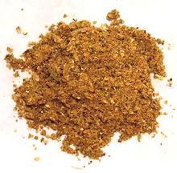

 |
Japanese Curry PowderJapan | ||||
| Makes: Effort: Sched: DoAhead: |
2/3 cup ** 20 min Yes |
Japan learned about Curry Powder from the British Royal Navy, and adjusted it to Japanese tastes. Curries have been very popular in Japan since the late 1800s (see Comments). | |||
|
------- 2-1/2 4 1 15 1/4 ------- 1/2 5 1/2 1 3 ---- 1/4 1 |
---- t t T pod t ---- in t ----- t T |
-- Toasted Cumin seeds Coriander seeds Fenugreek seeds Green Cardamom Fennel seeds -- Just Ground Star Anise pod Cloves, whole Cinnamon stick Peppercorns (1) Red Chili dry (2) ---------- Nutmeg Turmeric ground |
Make: - (20 min)
|